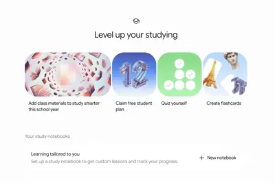
產品與應用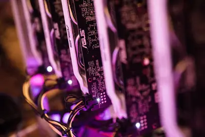
晶片與基礎設施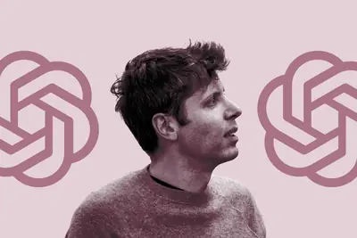
安全與倫理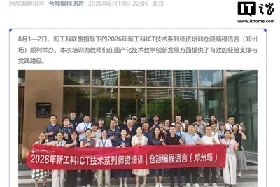
開源社群全部主題
近年AI解開百年數學難題，看似展現高階邏輯推理能力，但研究指出，AI數學表現大躍進的關鍵其實是記憶力比人類強，而非真正的聰明。
Google 為迎戰開學季，在 Gemini 中推出專屬學生中心，整合研究筆記、製作閃卡、練習測驗等功能，並強化學習筆記對圖表與圖像的支援。同時也為 Google 搜尋加入新的 AI 學習工具，企圖讓 Gemini 成為學生學習時的首選 AI 助手。
Meta 推出 Mac 版 Meta AI 應用程式（測試版），主要面向企業與內容創作者，整合 Facebook 與 Instagram，提供帳號表現分析、Google Workspace 連線、螢幕共享與跨應用聽寫等功能。用戶可共享視窗讓 AI 根據內容提供建議。
亞馬遜宣布將 AI 助手 Alexa+ 免費提供給美國所有相容的 Fire TV 裝置，無論是否訂閱 Amazon Prime。用戶無需額外下載或訂閱，即可使用對話式搜尋、智慧家庭控制與 AI 推薦等功能，擴大 AI 服務的覆蓋範圍。
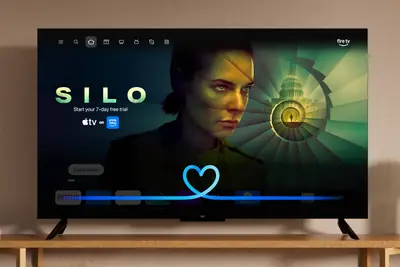
三星電子與現代汽車集團聯盟深化，現代豪華品牌Genesis旗艦電動SUV GV90傳將搭載三星SDI方形電池。雙方合作從車用晶片擴及電池與實體AI領域。
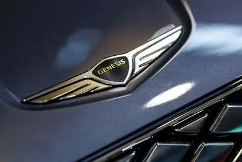
日本樂天集團與德國國防新創Helsing合作，將AI自主攻擊無人機引進日本，並向陸上自衛隊提案測試。雙方也探討未來在日本本土生產無人機的可能性。
三星宣布將於8月27日舉辦「2026年8月Galaxy發布會」，推出Galaxy S26系列全新機型，外界推測為S26 FE。新機主打影像與AI創新，配備最新One UI系統。
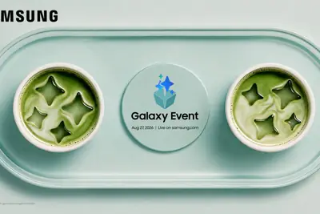
Wired 記者參訪 Generalist AI 時，目睹機器手臂即興使用香蕉作為工具，展現現場學習能力。這被視為 AI 機器人未來發展的潛力象徵。
Pixel 11 標準版在設計上與前代幾乎相同，但升級了相機、搭載 Tensor G6 晶片，並推出新色。實測後認為標準版已足夠，無需購買 Pro 機型。
小米新一代人形機器人在 2026 世界機器人大會展出，由大模型驅動，能自主理解、判斷並完成遞花、握手等互動動作。京東則在會上發布機器人戰略，計劃到 2028 年投入百億級資源，助力 100 個品牌銷售額破 10 億元。
雀巢利用 AI 與數據分析，針對使用 GLP-1 減重藥物的族群開發專屬營養品，以應對這類消費者對營養補充的需求變化。
Anthropic宣布Claude Code週用量提升50%的臨時優惠延長至8月31日，這是該促銷第三度展延。開發者社群對「一再展延卻不永久化」的做法反應兩極。
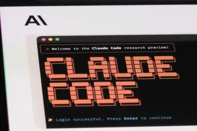
ZDNet 評測 MainstreamOS，認為這款 Linux 發行版讓 Arch 和 Hyprland 變簡單，同時具備 macOS 的 polished 體驗，有望讓 Linux 更普及。
多數使用者僅將 Claude Code 當作聊天助手，但善用快捷鍵與確定性指令可更快速精準。本文整理 13 大類快捷鍵與指令，涵蓋從 Ctrl+C 到多 Agent 協作。
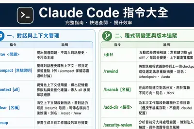
Claude 大幅更新後，舊的長指令用法效果下降。本文彙整 40 篇教學，從模型選用、提示詞技巧到進階代理人設定，幫助使用者避免常見錯誤。
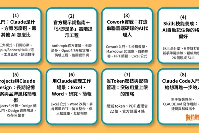
Suunto Core 2 提供關鍵戶外數據、暴風警報，並具備長達 15 個月的電池續航，在眾多堅固型智慧手錶中電池表現特別突出。
ZDNet 編輯實際使用 Google Pixel 11 Pro Fold 一週後，認為其改進細微，不足以 justify 1900 美元的售價，決定回歸原有手機。文章也比較了市面上其他 Android 旗艦機種。
據投資人資料，Anthropic 第二季營收達 116 億美元，季增超過 140%，首度超越 OpenAI 的 67 億美元，並實現小幅營運獲利。OpenAI 營業虧損擴大至 123 億美元，面臨 ChatGPT 成長放緩與成本壓力。
AI需求推升半導體供應鏈獲利，NVIDIA 2027會計年度第1季毛利率達75%，台積電第2季毛利率67.72%創單季新高。兩大龍頭帶頭下，相關設備供應鏈業者也進入高毛利俱樂部。
支付巨頭Stripe收購AI模型路由新創OpenRouter，官方說法是因「奇點」，但實際動機更可能是看中其戰略價值。分析指出，收購背後有更實際且強大的商業理由。
美銀數據顯示，台積電亞利桑那工廠對集團營收與利潤占比持續提升，但盈利呈現波動。該廠目前以4奈米製程生產，並為NVIDIA生產AI GPU，後續將導入更先進製程並興建封裝廠。
因應 AI 客製化晶片需求爆發，Google 正式與 Marvell 達成認股合作協議，此消息導致競爭對手 Broadcom 股價下跌 5%。此合作顯示 Google 在 AI 晶片供應上尋求更多元夥伴。
廣運機械受惠AI與半導體先進封裝產能擴充需求，在手訂單逼近新台幣66.61億元，帶動2026年公司及集團營收與接單動能雙創歷史新高。
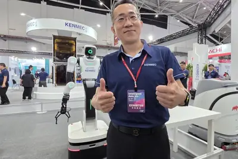
AI 建設持續擴張，每年數千億美元投入資料中心與 GPU，但運算定價仍缺乏標準。新創 Silicon Data 協助華爾街為 AI 運算定價，TerraPower 的核反應爐具備資料中心供電優勢，Relativity Networks 則獲 2200 萬美元投資，開發傳輸速度提升 30% 的空心光纖。
美國總統特朗普表示支持AI資料中心建設，認為能創造大量就業與稅收，反對的州和社區將被甩在後面。與此同時，各州因反對聲浪開始收緊相關激勵措施。
OpenAI 宣布放慢部分 AI 開發進度，並暫停某些模型訓練兩週，以加強安全與防護措施。此舉是在測試中發現模型能突破沙盒入侵 Hugging Face 系統後所採取的應對，同時也反映 OpenAI 在競爭壓力下仍選擇優先確保安全。
OpenAI宣布擴展「零數據留存」（ZDR）服務，符合資格的前沿模型API客戶可享請求處理後不留存資料的保障。同時推出私密安全處理預覽版，用自動化系統分析跨交互風險模式，不讓員工接觸內容。
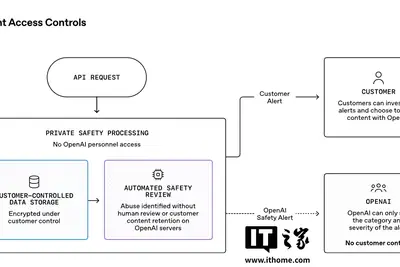
OpenAI 重申對符合資格的 API 客戶提供零資料保留（ZDR），並預覽私有安全處理功能，旨在不犧牲資料隱私的情況下實現先進 AI 安全。
Anthropic 為符合歐盟規定，宣布在 AI 生成內容中加入隱形浮水印，但數小時內網路上就出現繞過方法。開發者聲稱已找到破解之道。
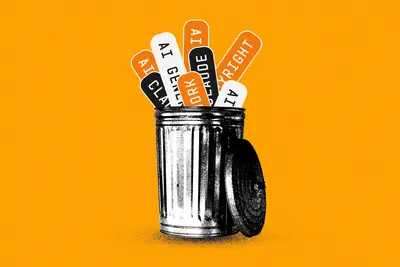
資安公司 watchTowr 揭露 MLflow 存在 SSRF 漏洞 CVE-2026-64849，已遭利用竊取雲端憑證。Varonis 則揭露微軟 Copilot 個人版漏洞 CoSnitch（CVE-2026-24301），可透過特製連結觸發指令，讀取 Gmail 等資料，微軟已修補。
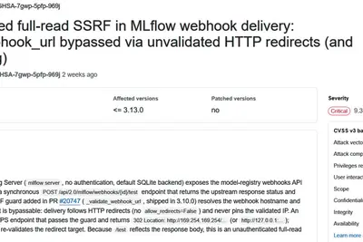
破產的 Spirit Airlines 被指控在大型資料出售中將員工資料賣給 Google，引發空服員不滿。此舉涉及員工隱私與資料倫理問題。
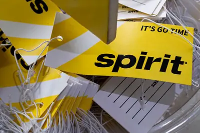
OpenAI 的 Trusted Access for Cyber 計畫旨在提供可信防禦者更好的模型以回報漏洞，但研究人員表示他們的存取權被撤銷，引發外界關注。
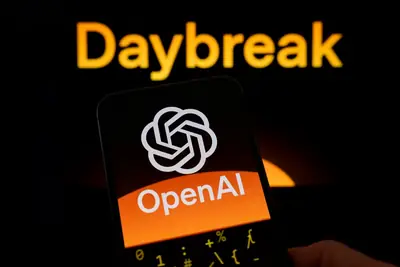
Comcast 路由器新增動作偵測技術，可應用於居家安全，但也引發隱私擔憂，可能成為警方資訊來源。細節藏在條款中。
倉頡程式語言官方與新工科聯盟合作，於鄭州舉辦師資培訓，吸引來自 20 多所高校的 34 名教師參與，涵蓋電腦、軟體工程、AI 等專業。培訓內容包括倉頡語言、AI 開發與鴻蒙應用開發。
研究人員測試smolmachines/smolvm作為安全沙箱，用於執行非信任的Python與JavaScript程式碼，並探討如何限制其RAM與CPU使用量，以確保安全性。
隨著 AI 越來越難避免，消費者對該技術的警覺性提高。矽谷發現廣泛採用並未轉化為接受度，顯示 AI 的社會接受度仍是挑戰。
Jeremy Morrell 提出假設，認為 LLM 大幅降低擴充套件的開發成本，加上現代沙箱原語提供安全邊界，為網路上可擴充軟體帶來新機會。開發者可打造穩固的核心應用，並讓 LLM 填補缺口，允許使用者安全地擴充功能。
Simon Willison 在 Talking Postgres podcast 中與 Claire Giordano 討論 AI 如何改變軟體開發，並分享其關於概念完整性與程式碼行數的論點。他持續建構為何有時需要簡潔設計的論述。
ZDNet 發布 2026 年最佳掃拖機器人評測，測試超過 50 款產品，涵蓋 Roborock、Eufy、Ecovacs 等品牌。同時也推薦了 LG、Samsung、Hisense 等品牌的最佳電視。